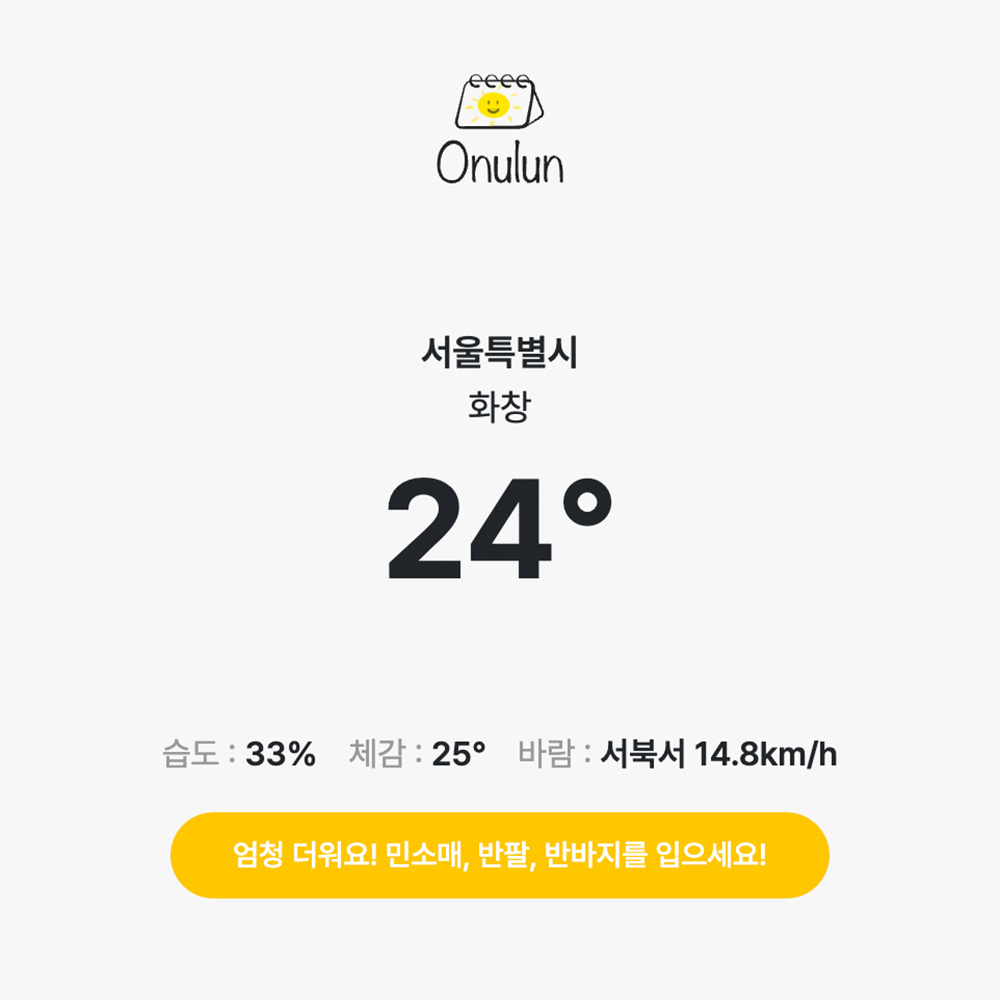

Go To List

이미지를 클릭하면, 해당 페이지로 이동됩니다.
Onulun
바닐라 자바스크립트 및 날씨 API를 사용하여 만든 날씨 & 다이어리 앱으로 총 4명이 작업한 팀 프로젝트입니다.
현재 날씨 및 주간날씨를 한 눈에 확인 할 수 있으며, 현재 온도에 따른 스타일도 추천합니다.
오늘의 날씨 카테고리를 클릭하면, 오늘의 날씨를 디테일하게 확인할 수 있습니다.
또한 일기 카테고리를 클릭하면, 일기 작성이 가능합니다.
javascript
html
css
작업 내용
작업 기여도 : 50%
(메인 전체, 일기 감정 이모티콘 추가 기능, 일기 삭제 기능)
UX/UI 디자인 : 80%
설명
현재 위치한 곳에 날씨를 확인할 수 있습니다.
현재 온도에 맞는 스타일을 추천 받을 수 있습니다.
주간 날씨를 확인 할 수 있습니다.
오늘의 시간대별 날씨, 하이라이트 날씨를 확인할 수 있습니다.
캘린더를 통해 현재 및 다른 날짜의 일기를 작성할 수 있습니다.
감정 이모티콘과 함께 일기를 작성할 수 있습니다.